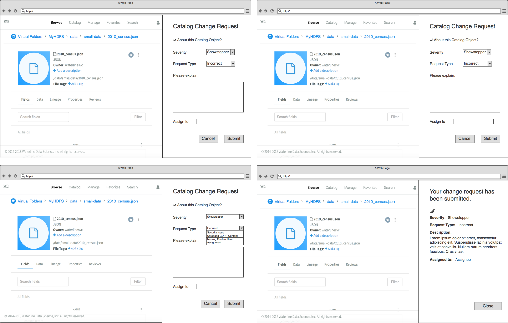
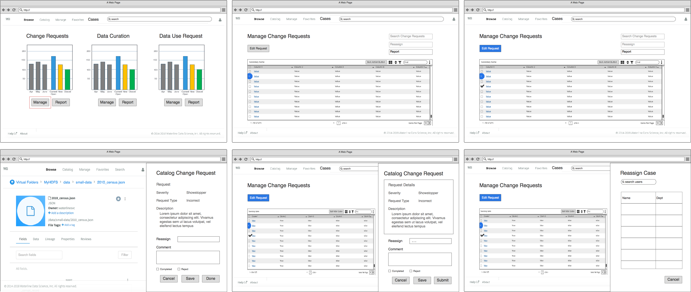
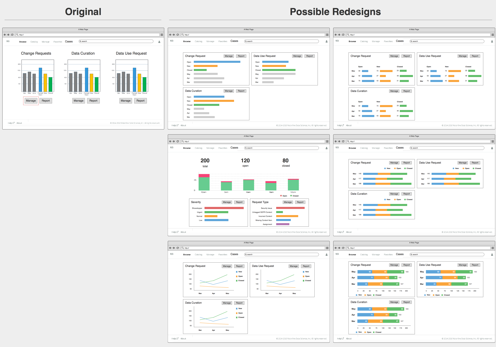
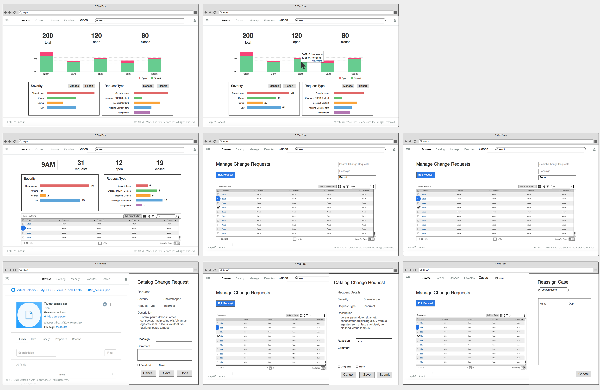
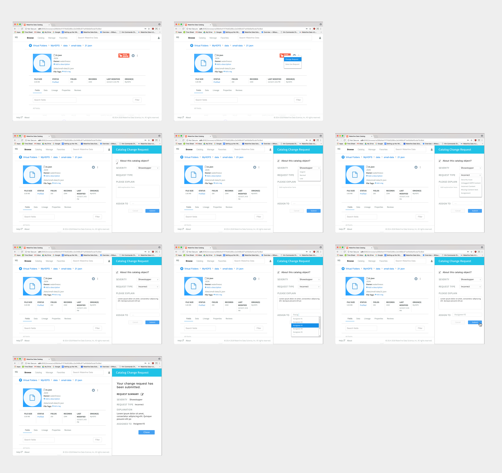
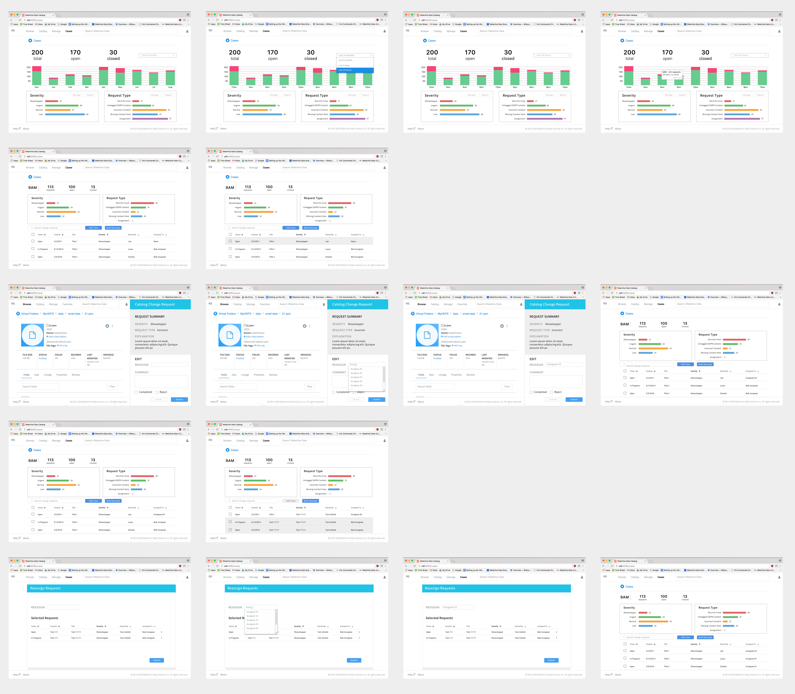

Summer 2018, I worked at Waterline Data as a software engineering and UX design intern.
My work focused on the company's enterprise data catalog product, where I used Java to program HTTP response status codes to the product's REST API. I later continued to add similar error messages to the data catalog's UI.
I also researched the data catalog's tag clustering feature, which used machine learning algorithms and neural networks to categorize data into smaller subgroups (e.g., name, population) and identify duplicate data sources that are labeled under different names.
Although I initally joined as a software engineering intern, I volunteered to pick up additional work from the UX team, where I created UX prototypes, visual designs, and user research reports for new product features.
Because Waterline Data focuses on allowing users to locate, filter, and change large amounts of data, the greatest design challenge was creating a user experience that presents the data clearly and concisely.
One of my UX assignments involved allowing users to request changes in datasets with inaccurate data or discrepances with the data's General Data Protection Regulation (GDPR) status.
My first iteration involved nailing down the functionalities that my product manager wanted to establish through the data change request feature. Because I wanted to prioritize functionality of the user experience over visual design during the first iteration, I used Balsamiq because of its efficiency in creating premade UI elements and linking wireframes together.
The first set of 4 images demonstrates a user making a change request to fix incorrect data in an important dataset. The user can select the urgency of the dataset error as well as what kind of error it is. The second set of 6 images demonstrates a data steward processing the user's change request and assigning it to someone who can best handle the issue.
 After receiving feedback from my UX lead and product managers, we decided that the data steward's experience looking through user change requests could be drastically improved, since product management's intial vision seemed to incorporate too much information into one panel.
I designed several possible dashboard view experiences for the data steward to look at data change requests.
We found that the current view combining change requests, data curation, and data use request proved repetitive, so we created an overall case request dashboard to simplify the experience.
We decided to use the redesign using a separately colored histogram to represent data on the change requests. We followed Ben Shneiderman's mantra "Overview first, zoom and filter, then details on demand," by allowing the user to click on a bar to get more information about change requests made at a certain time period.
Since the simultaneous use of date and severity to visualize data would be confusing for a steward identifying request statistics, we decided to allow the main dashboard panel to reflect a 2-variable relationship between date and quantity, with severity and request type displayed in later panels.
Upon showing my changes to my product manager, we agreed that it would be best we have options for the time increments on the histogram, as different steward roles might want to access data on change requests from different time comparisons.
My third iteration involved implementing these changes and adding a bulk request option that allows stewards to reassign multiple case requests to one person (e.g., if someone leaves the organization and we want to assign that employee's cases to a new replacement).
I also used Sketch to create a more polished UX design that combined the improvements we made in the 2nd iteration with the change request creation feature (which we did not focus on as much, since viewing change requests proved more data intensive to design).
 I learned a lot from my first technical internship! This was the first time I worked on pre-existing frameworks for both software engineering and design, so I learned the importance of communicating with my teammates who have worked at Waterline Data for much longer than I have.
I enjoyed learning how to use new tools like Postman, Solr, Hadoop, and Jetty to work on the company's software, and I realized that the challenge of software development comes in being able to integrate multiple tools and other people's code to create a deliverable product.
I also appreciated Waterline Data's efforts in teaching their interns various aspects of their product, including the machine learning algorithms used to analyze data sources and the languages used to create the product's front end.
As for the design aspect of my internship, I had a very unique experience, as this was the first time I was given direct guidelines from my product management team on what to create. Because I was given product guidelines and specs ahead of time, I felt that my ideation process was much more predetermined than it has been in the past.
Overall, interning at Waterline Data was an amazing learning experience, and I hope to use what I learned this summer for future projects in the future!